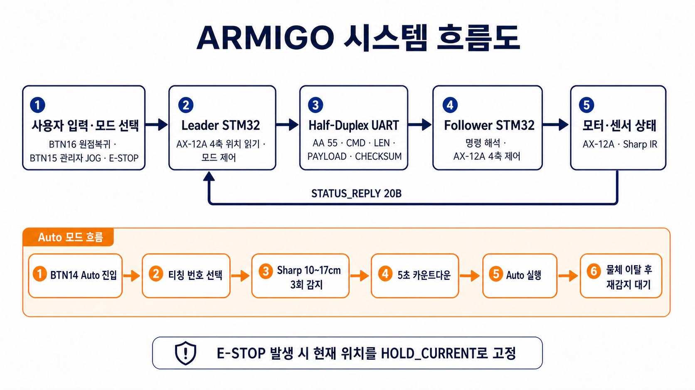
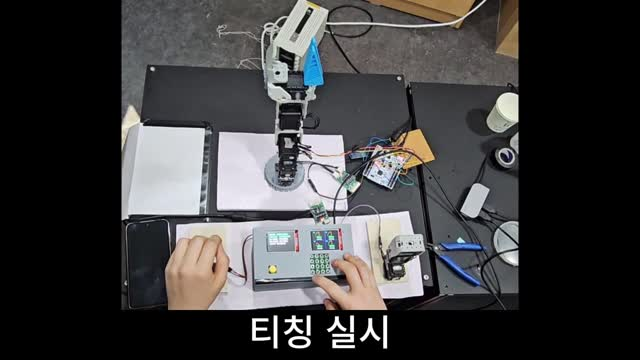

4축 로봇팔 티칭 시스템 ARMIGO
팀장을 맡고, 정재영 팀원과 함께 4축 모터 제어와 로봇팔 하드웨어를 구현했습니다.


나의 역할 · 팀장 / 하드웨어·모터 제어
AX-12A 모터 제어와 회로·외장 제작을 정재영 팀원과 공동 담당했습니다. 세 번째 모터 연결 시 발생한 통신 실패를 해결하고 위치 데이터를 확인했습니다. 담당 구현 보기 →
팀 시스템 · 자세 입력과 반복 재생
Leader Arm의 4축 자세를 STM32가 읽고 HC-05로 전달하면 Follower Arm이 목표 위치를 재현합니다. 자세를 Flash에 저장해 전원 재인가 후 반복 실행하는 티칭 시스템입니다.
통합 결과 · 티칭·자동 모드 시연
키패드·LCD 인터페이스와 판단 로직은 다른 팀원이 맡았습니다. 모터 제어를 해당 기능과 연결해 티칭·자동 동작을 시연했으며, 아래 영상은 팀 통합 결과입니다.
모터 버스 설계와 로봇팔 제작
통신 배선을 줄이는 버스를 구성하고, 위치 제어 회로와 외장·그리퍼를 공동 제작했습니다.


배선을 줄이는 Half-Duplex·Daisy Chain
관절 움직임을 방해하는 배선을 줄이기 위해 통신선 하나로 송·수신하고 모터를 연쇄 연결했습니다. USART1 1 Mbps 모터 버스와 USART6 115200 bps 보드 간 통신을 분리하고, Protocol 1.0으로 위치·속도·상태를 다뤘습니다.
기판 고정부터 그리퍼 제작까지
부품별 구역을 정해 만능기판을 배선하고 라벨을 붙였습니다. Rhino 8로 외장·그리퍼를 설계해 3D 프린터로 제작했습니다. 외장은 보드·배선을 보호하고, TPU 그리퍼와 마찰 표면은 물체를 잡도록 구성했습니다.
공동 구현을 팀 펌웨어와 연결
모터 위치 읽기와 목표 위치 제어를 팀의 티칭 기능에 연결했습니다. 통합 펌웨어는 Flash 자세 저장과 FreeRTOS 태스크 분리, SPI·UART 공유 접근의 Mutex 처리를 포함합니다.
다중 모터 통신 실패를 해결한 과정
모터 수에 따라 달라지는 통신 실패를 회로·수신 방식·UART 설정으로 나누어 해결했습니다.


01 · 모터 2개는 동작, 3개부터 통신 실패
문제 모터 수가 늘면 송·수신이 불안정했습니다. 조치 Pull-up 구성을 검토하고 외부 4.7 kΩ을 적용했습니다. 확인 변경 후 다중 모터 동작을 확인했습니다.
02 · Polling 대기를 인터럽트 수신으로 변경
조치 송신 완료 콜백에서 Half-Duplex를 RX로 전환하고 인터럽트 수신을 시작하도록 구성했습니다. 확인 헤더·ID·길이·체크섬을 검사한 응답에서 위치값을 반영합니다. 위치 읽기·콜백 코드 ↗
03 · UART 설정과 실제 위치 데이터 확인
조치 RCC·UART 설정과 HC-05 Master·Slave 역할을 수정했습니다. 확인 Teleplot 위치 그래프와 티칭·자동 모드 시연으로 통합 동작을 확인했습니다.개선 전후 지연·손실률의 정량 수치는 측정 기록이 없습니다.